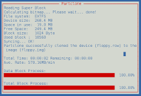

Partclone provides utilities to back up and restore used-blocks of a partition and it is designed for higher compatibility of the file system by using existing library, e.g. e2fslibs is used to read and write the ext2 partition.
Partclone try to support all file systems in the world. We spend much time to do this and continual develop for new file systame. Partclone is an image engine, not only clone file system to image or restore from image, but also duplicate devices. It also support pipe, stdin and stdout which is helpful for advanced administrator to script special features via partclone utilities. For rescue situation, our rescue mode can skip broken blocks and backup all healthy block to save your device. Ddrescue is better to save broken data with partclone which support list all used blocks as domain file to make ddrescue smarter and faster. All Partclone utilities is text mode and ncurses interface, if you prefer save more resource, quiet mode is also nice. All backup blocks is vertified by crc32 to make sure your data is correct. Please check our usage to get more information.
| FS | Library | Utility |
|---|---|---|
| Btrfs | btrfs-tools | partclone.btrfs |
| Ext2 | e2fsprogs | partclone.ext2 or partclone.extfs |
| Ext3 | e2fsprogs | partclone.ext3 or partclone.extfs |
| Ext4 | e2fsprogs | partclone.ext4 or partclone.extfs |
| Reiserfs | libreiserfs | partclone.reiserfs |
| Reiser4 | reiser4progs | partclone.reiser4 |
| XFS | xfslibs | partclone.xfs |
| JFS | jfsutils | partclone.jfs |
| NTFS | ntfsprogs | partclone.ntfs |
| FAT 12 | X | partclone.fat12 or partclone.vfat |
| FAT 16 | X | partclone.fat16 or partclone.vfat |
| FAT 32 | X | partclone.fat32 or partclone.vfat |
| HFS plus | X(ref:HFS Plus Volume Format) | partclone.hfsplus , partclone.hfsp or partclone.hfs+ |
| UFS2 | ufsutilies | partclone.ufs |
| VMFS | vmfstools | partclone.vmfs |
| dd | raw copy any file | partclone.dd |
| imgchk | check image file | partclone.chkimg |
| imginfo | list image head information | partclone.info |
| restore | restore any image made from partclone | partclone.restore |
| ntfs reloc | deals with braindeadness with moving NTFS filesystems | partclone.ntfsreloc |
| vmfs type | get vmfs type | partclone.VMFS_volume_member |